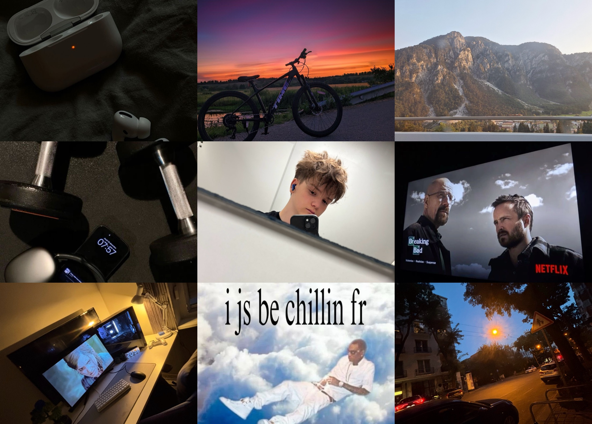

15 éves vagyok,Miskolci,nagyon szeretek játszani nyilván ki nem?Kondiba járok ha van pénzem,és 7 éves korom óta érdekel az informatika,nem tudom hogy miért de úgy érzem hogy ez lesz nekem a legjobb.Háziállatom nincs.Imádok zenét hallgatni mert egyszűen akkor kapcsolok ki és nagyon szeretek a haverokkal is menni mendegélni stb...
Azért választatottam a Kandót mert mint az előbb is említettem hogy az informatika világa is nagyon érdekel.A Kandó azért lett a jó választás mert tényleg csak az informatikával foglalkozunk nyilván ott a többi tantárgy is de engem komolyan csak a programozás,a harder és a software foglalkoztat.
